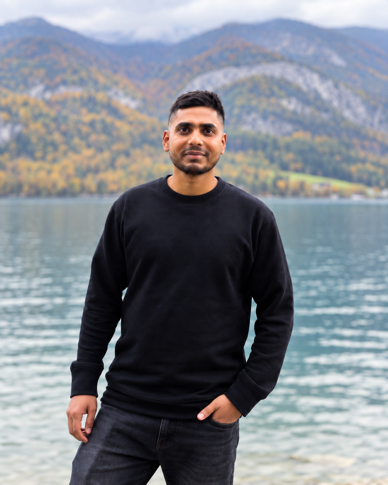
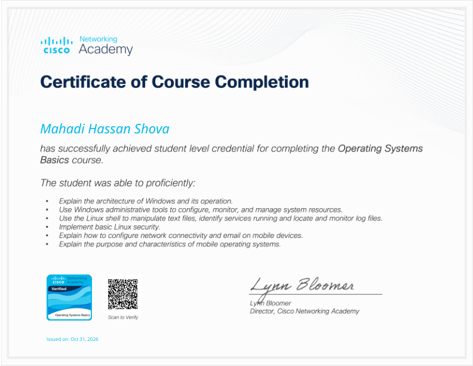
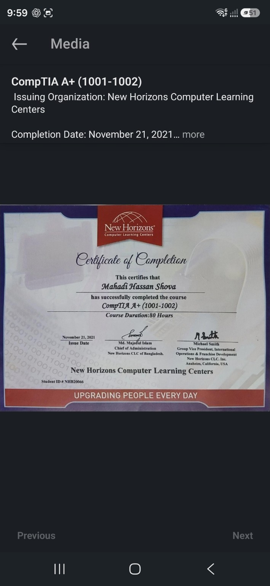

CASE STUDY 01VLANsSOLUTION DESIGN
DESIGN · VALIDATION PENDING
Segmented office network
Design a small office network for staff, CCTV and guests.
Read the solution↗I'm Mahadi Hassan Shova, an IT & Network Support Engineer based in Vienna. My experience spans on-site IT support in Austria, ISP network administration and practical troubleshooting.

Three integrated solution designs, plus a collection of seven foundational CCNA practice labs.
Design a small office network for staff, CCTV and guests.
Read the solution↗A troubleshooting design for two sites affected by three independent faults: an administratively disabled WAN interface, mismatched OSPF areas and a missing remote LAN advertisement.
Read the solution↗Design a two-link EtherChannel between access switches.
Read the solution↗Port security, EtherChannel, STP, VLANs, OSPF, static routing and DNS/DHCP. Guided simulator screenshots include initial fault states and learning objectives.
I am an IT and networking professional with on-site support experience in Austria and ISP networking experience in Bangladesh. I am pursuing a master’s degree in Computer Science at the University of Vienna, and preparing for CCNA through guided practical labs.
German: B1 (in progress), conversational · English: B2 · Bangla
Tech Domain Pty Ltd
Part-time, on-site support in Vienna: hardware troubleshooting, software deployment, network diagnostics and support-desk coordination. Tools included Microsoft Teams, AnyDesk and PuTTY.
Suchona Broadband, Bangladesh
Fiber deployment, LAN cabling, router setup, MikroTik and network troubleshooting.
University of Vienna
Hamdard University Bangladesh
Router configuration · MikroTik
Fiber deployment · Cat5/6 · RJ45
CCNA studies — in preparation
Windows · Microsoft 365
Connectivity troubleshooting
Azure familiarity — no professional experience
CCTV installation
Network cabling · Device setup
Practical problem-solving
University of Vienna · February–May 2025. Analysed IPv4/IPv6 RIPE Atlas traceroute data, processed compressed JSON in chunks with Python, identified repeated IP addresses and exported daily loop counts to CSV. Visualised trends and loop-length distributions using Matplotlib.
Team project at Hamdard University Bangladesh: used Python, OpenCV and OCR to detect number plates and recognise characters. Work included coding, testing and optimisation for image conditions such as angles and lighting.
Projects on LinkedIn↗
Course completed · 31 October 2026
Windows architecture and administration, Linux shell, basic client security and mobile operating systems.
View certificate ↗Course completion certificate. CCNA certification remains in preparation.

Course completion · 80 hours · 21 November 2021. Training in IT support, hardware, software, operating systems and networking.
View certificate ↗360-hour, six-month course · Grade A+ · Issued 16 March 2016. Microsoft Word, Excel, PowerPoint and office productivity.
View certificate ↗Interested in IT support, networking and infrastructure opportunities across Austria.